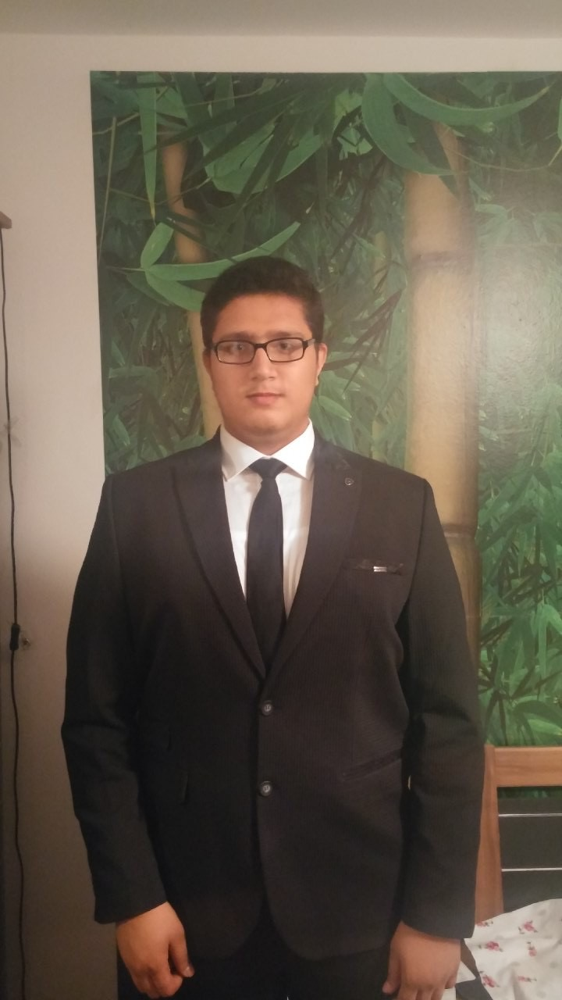
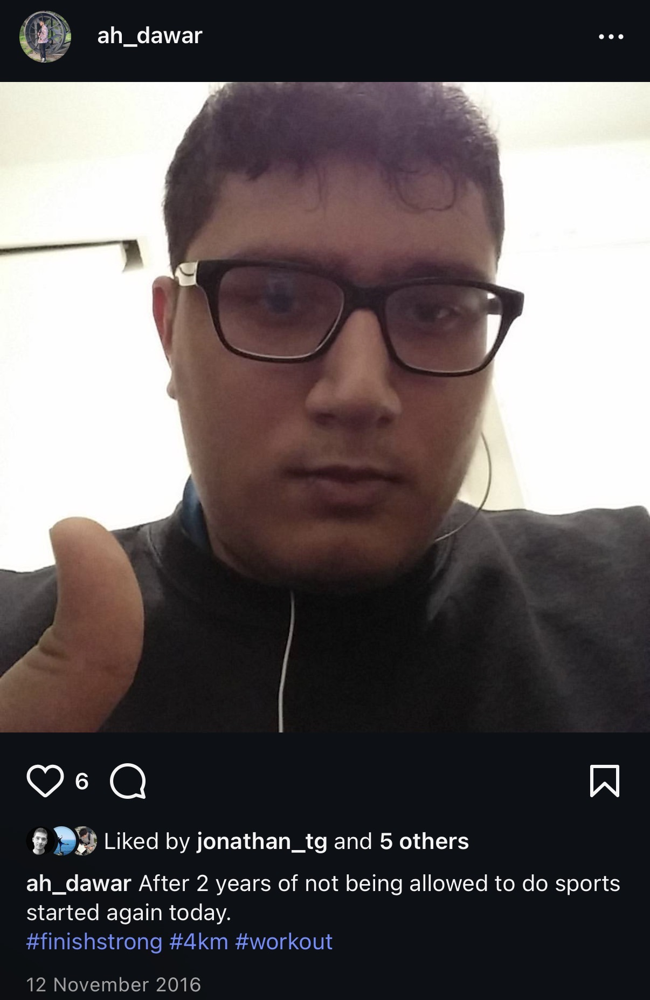
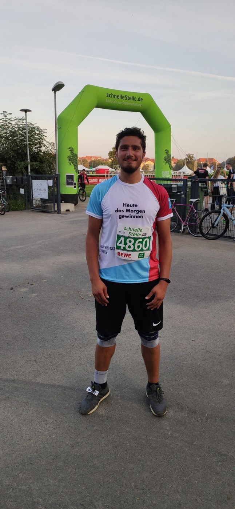
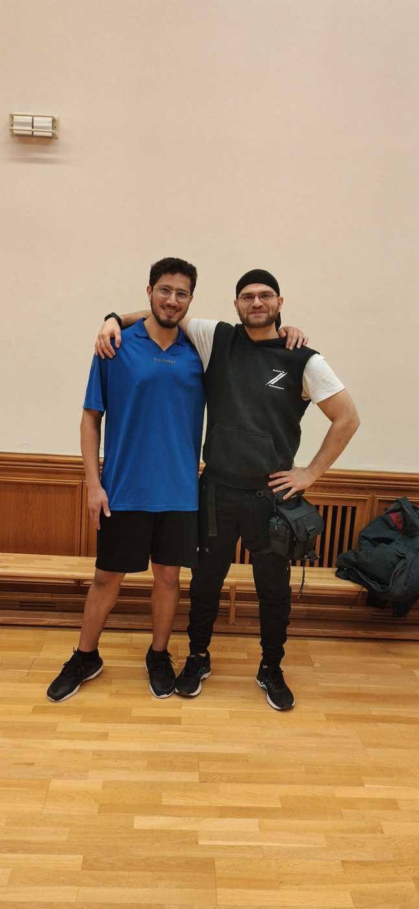
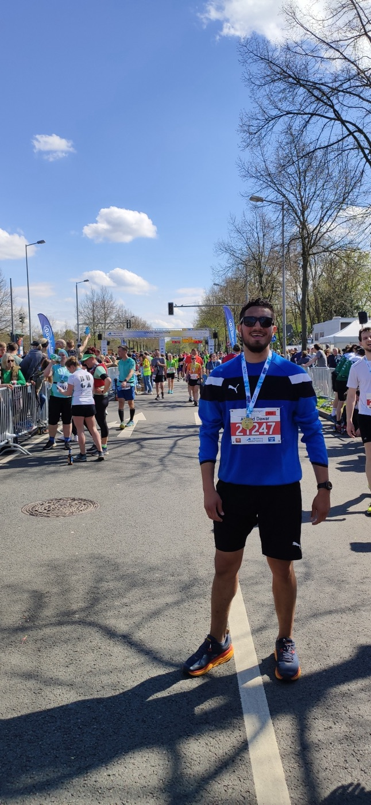
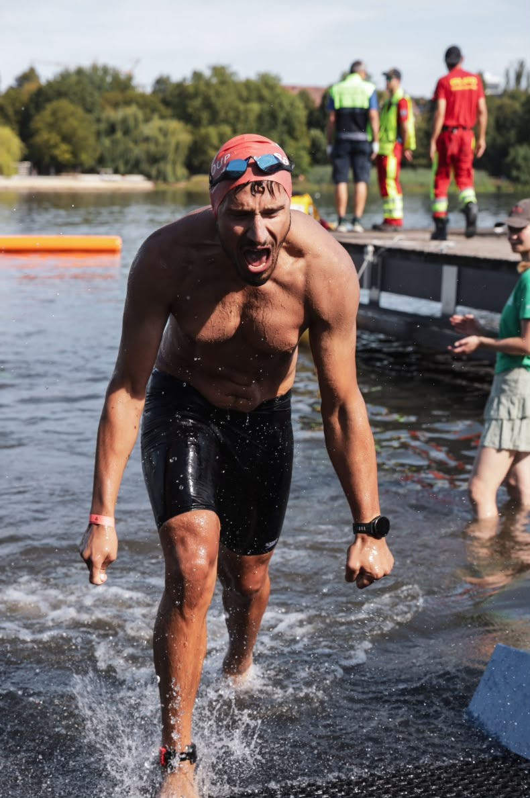

You didn't hate the person you were 10 years ago. You loved him so much that you wanted better for him.
12.11.2016 - I tried to tie my shoe while standing, but I couldn't reach it. My stomach was in the way. At that moment I just hated my body. I used to be fit. I was playing professional table tennis, I was a good football player, I trained every day. Now it felt like all of that was gone.
I had injured my knees, hadn't been able to work out for over 2 years, and became depressed and overweight. I was weighing 134 kg (almost 300 pounds for any American reading this).
And at this moment, I was so angry at myself. I just put on some random trainers, wore the only fitting sports clothes I had and went for a run. For years I thought I ran 4 kilometers (as you can see at the proud hashtags of the post) but in fact it was only 2 kilometers (I walked the path years later with a smartwatch). My legs hurt for a whole week, and I was walking like a drunk penguin.


Learning to show up
And from that moment I did it consistently once or twice a week - running incredible 2 kilometers.
At university, I met some people who asked me if I wanted to join a bodyweight fitness class. I had no clue what it was. When I saw the name Bootcamp, I just remembered the novel by Morton Rhue, and I feared that the coach was going to torture us.
The class was hard. My whole body was aching for a full week, and in my head there was this self-talk of "Do we really want to go through this pain again?" And I was able to shut it down and answer it with yes. I went back week by week. Most weeks it took me ages to cycle home since my legs were just dead afterward, but I started to enjoy the pain.
After the semester ended, the coach stopped offering this course, so the friends who asked me to join the Bootcamp class recommended a "normal" bodyweight fitness class. And when I asked them, "We are going to the beginner class, right?" they told me they went to an intermediate one, and it was fine - so let's select the hard class - how hard can this class be?!
We all three signed up and both of my friends bailed after the first session - since this coach, Kenny, was just loco.
Years later, Kenny told me that when he saw me in the first class, he thought I wouldn't show up after 1, max 2, sessions. But I kinda stuck with it. It was just fun; I saw progress (it felt like my body hurt half a day less each week). And I kept doing that once a week for months. I had a session where I couldn't perform, and I doubted myself. Kenny always told me: "There are always sessions that are shit, but at least you showed up, and this is the important thing you can do."
Over the years, I started going for a second session, then a third and a fourth. And next to it, I was always doing my short runs. I wasn't always motivated; I just did the routine. There were days when I absolutely didn't want to go running. Especially in winter, when it was minus ten degrees outside. I would just put on my ski jacket to stay warm enough and go for a run anyway. Yeah, I had setbacks. There were times when I was injured or sick and couldn't work out the way I wanted to. I needed to use different bandages to do the sports I wanted to do, but I kept finding ways to stay active.

Running in the dark
At some point, I infrequently started running longer distances, mostly late at night, around 10 or 11 p.m. on Fridays through the dark because I was ashamed of my body and of people seeing me run. At some point I heard Afghans saying in Dari, "Saiko Chakumbai chetor medowa" (Look at this fat guy and how he runs), and they didn't know that I could understand them.
There was one night where I just started running and I wanted to try a different route, and I kinda freestyled it (back then I didn't run with a watch or anything). I started at 10 p.m., kept running and running, getting lost in the dark. With Google Maps I managed to somehow navigate myself back home. The whole time I wasn't looking at the time, and once I got back to our building, standing in the elevator, I saw that I had been running for 1.5 hours (it was a 9 kilometers loop so you can do the math of my pace). And immediately my legs didn't want to hold me anymore, and I needed to hold on to the wall to get to my apartment. I went into drunk penguin mode for a week, but the pain felt amazing.
So the next week, I took the same route again, and I enjoyed every step of it.
Breaking the limits in my head
Kenny, the loco coach, made us do so many hard things, pushing us to our limits and one step further, which taught me resilience and that you are most likely not going to die.
He made us do fun exercises like the Japan Test, which essentially is 1,000 squats in a row without a break. Immediately, my brain thought we would never be able to do so many squats, but somehow I got through the first 100 without thinking too much about it and then I realized I could find a rhythm where my legs recovered enough to do one more squat.
And on that day I found out it takes me 19:32 minutes to complete 1,000 squats. That day, I shattered the belief that I couldn't do hard things like that.
Another fun one was called Death by Burpees, where you start doing 1 burpee in the first minute and the rest is a break, in the second minute you do 2, and this continues until in minute 12–13 you have no break anymore. To this day, I still love burpees because of this; in every gym class when it's on the board, I'm getting excited while others moan.
Over time, I kept breaking through mental barriers I'd built for myself and realized that so many limits existed only in my mind (like the great Mark Dowdle said: "Every step is the evidence. The story in your mind is not true. FORWARD. FORWARD.")
Unfortunately, our paths parted ways, but I'm so thankful to have met Kenny in my life.

There was one limitation that had been stuck in my head long before I met Kenny. When I was 16, after my knees had been hurting really badly, my orthopedist told me I would never be able to run again.
That's why running my first half marathon was so important to me. It wasn't about the distance or finishing in a particular time. It was about doing something I had been told I would never be able to do.
I didn't tell anybody that I was going to run it. I just started training for it. And the process felt amazing. I thought that once I crossed the finish line, I'd be incredibly happy.
But I wasn't.
Don't get me wrong, I was proud of what I'd done, but crossing the finish line itself didn't do much for me. Especially because I didn't have anyone there to share the moment with. I realized that what I had loved most wasn't reaching the goal. It was the process of becoming the person who could reach it.

For most of my life, I also believed I couldn't swim. If I went into deep water, I'd drown.
I learned swimming when I was 18 (I never liked going to pools also because I was ashamed of my obese body), but my new fellow students asked me if I wanted to join them to go swimming.
I thought we were going to a fun swimming hall with slides and jacuzzis, but we went to a sports swimming hall with 50 m lanes. I had never managed to swim 25 m in my life. I knew the basics of the technique, I knew the motions, but I had never successfully used them. And on that day I didn't say anything, and I didn't want to embarrass myself, so I just tried it.
I went through the motions, and I didn't drown - a belief I had for most of my life was that I would just drown if I didn't hold onto something. It took me ages to finish one lap, and I probably drank 1 liter of swimming pool water in the process, but I didn't die. It felt like a knot in my head had finally come undone.
I ended up swimming more laps, and since then I knew how to swim (even though I wasn't good at it).
And this year I finished my first triathlon, overcoming an additional fear of swimming in open water. And this is a highlight pic that was taken after I was done with the swimming part - and you can see in my eyes what this meant for me.

Falling in love with movement
Along the way, I lost over 50 kilograms. But there was also a phase when I became obsessed with getting shredded. I was so focused on how my body looked that I lost some of my hunger for training and my motivation for a while. Eventually, I found my way back to enjoying movement for its own sake. And today, I have a really healthy relationship with food, too.
Over the years, I tried many different sports, from rowing and hooping to cycling and beach volleyball. I love being a beginner and learning the techniques to get good at a sport. I LOVE the process.
Now when people ask me whether I'm a runner, lifter, cyclist, triathlete, I just tell them: I'm just a human who likes to move his body.
I run, I lift, I do yoga, I cycle, I swim, I go on hikes, and I just love moving. I love the moment I put my sports clothes on; I love the warm-up; I love learning new techniques; hell, I even love sweating and being out of breath.
And at some point, this love for movement became something I wanted to share with other people too. In the process of learning more about movement and training, I became a strength and running coach, spreading the joy of working out.
It made me so happy when friends or even complete strangers came up to me and told me they had never seen somebody be so enthusiastic about working out and that this made them also want to work out more, get fit, and build a better relationship with their bodies.
What I'm actually training for
My main motivation is not to have rock-hard abs, run a half marathon in a given time, or beat anybody at any sport. I'm just competing with myself, and I love seeing that I'm getting better and fitter. But ultimately, I'm playing the long game.
I want to stay fit and mobile for as long as possible. I want to run and play with my future kids without being held back by fatigue, aching muscles, or painful joints.
That's also how I look at my health metrics. Yeah, it's nice that my resting heart rate has gone down to 40, but what matters more to me is the hope that I'll have a healthy heart for many years to come.
The same goes for my muscles. I don't really care (anymore) about how they look. When I did a body composition scan, I realized how valuable it is to build a strong foundation while I'm young. We all lose muscle mass as we age, and maintaining it is generally easier than building it from scratch later in life. My scan also placed my bone density in the 99th percentile for my age group, another result I hope will serve me well as I get older.
But there's another reason I love working out, one that has nothing to do with physical fitness. It's much more than that. It's a form of active meditation.
When I go for a longer run, I often feel like my head is holding a huge pile of tasks and problems, and I'm unable to sort through them. But as I run, breathe in the fresh air, and just keep moving, I somehow manage to organize that pile and work through my problems one by one.
It's almost like gaining a superpower for solving problems. By the end of the run, everything feels sorted out, and it's such a nice feeling, both for my mind and my body.
That's also why I never run with music. I don't want to distract myself from this process. Running gives me the space to think, without emails, messages, or anything else demanding my attention.
Ten years later
Today is November 12, 2026. A whole decade has passed since that very first run. A DECADE. That still sounds crazy to me! I thought about doing some crazy challenge - running 100 kilometers or doing one event every month leading up to today.
But I realized that this is not who I am or what motivates me. I didn't train for ten years to put my health at unnecessary risk just to complete some crazy challenge. I trained because I want to be healthy and able to move for as long as possible.
I've realized that whenever I decide to do a race or a challenge, I need a why - a meaningful reason for doing it. Just like my first half marathon, where I wanted to prove to myself that I could run again. But I don't have that why for a 100-kilometer run or a marathon right now. And that's fine. What brought me this far was consistency and having fun. That's what I'll stick with.
And that's why this day means more to me than my birthday. It marks the beginning of something that changed such an important part of my life.
I'm proud of myself and the person I've become along the way - a kind, sporty guy who always has a dumb joke on his lips and a smile.
And what makes me proud isn't just being fit or completing races. It's everything that came along the way. I made so many friends through sports. I developed a better connection with my body. I learned to enjoy the process rather than only chasing the outcome. And through injuries, illness, setbacks, and days when I didn't feel like working out, I learned what consistency really means.
I also became much more social and extroverted. I learned how to connect with people, have fun with them, and motivate them just by showing up and doing the thing. That's something I now carry into my life as a computer scientist and researcher, and I think it's a superpower.
When I think back to 2016, when I couldn't reach my shoes, was depressed, overweight and ashamed of my body - I hated myself. And now I'm seeing it through the frame that I loved myself and wanted better for the person I was back in 2016, when I was 18. It's crazy where I'm now and how happy I'm right now.
And I guess that's the best measure of success. Nassim Taleb said it beautifully in his commencement speech: "There is a single definition of success: look at yourself in the mirror and wonder if you disappoint the person you were at 18. [...] If you are not ashamed, then you are successful."
And I'm definitely more than proud. As for the next ten years, I don't have a particular race time, distance, or fitness goal in mind.
I just want to be happy moving my body, meeting amazing people, accumulating more memories and life stories.
Maybe nobody read the whole thing, and maybe I just wrote it for myself, but if you did, thank you!